27. Хеш-функция, хеш-таблица и коллизии
Коллизии, адресация, перехеширование и вероятностная проверка.
Материалы и примеры по пунктам
Хеширование: идея, хеш-функция, хеш-таблица, коллизия
Идея хеширования: Преобразование входных данных произвольного размера в строку фиксированной длины (хеш-код). Это позволяет быстро находить, сравнивать и хранить объекты, используя их «цифровой отпечаток» вместо полного перебора.
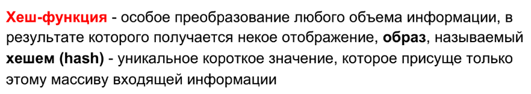
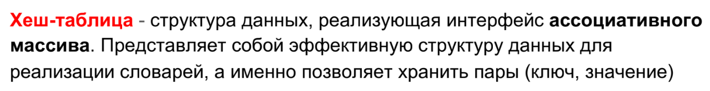
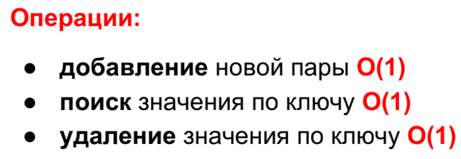
Коллизия: Ситуация, когда хеш-функция выдает один и тот же результат для двух разных входных данных. Поскольку количество возможных хешей ограничено, а входных данных — нет, коллизии неизбежны и решаются специальными методами (например, методом цепочек или открытой адресацией).
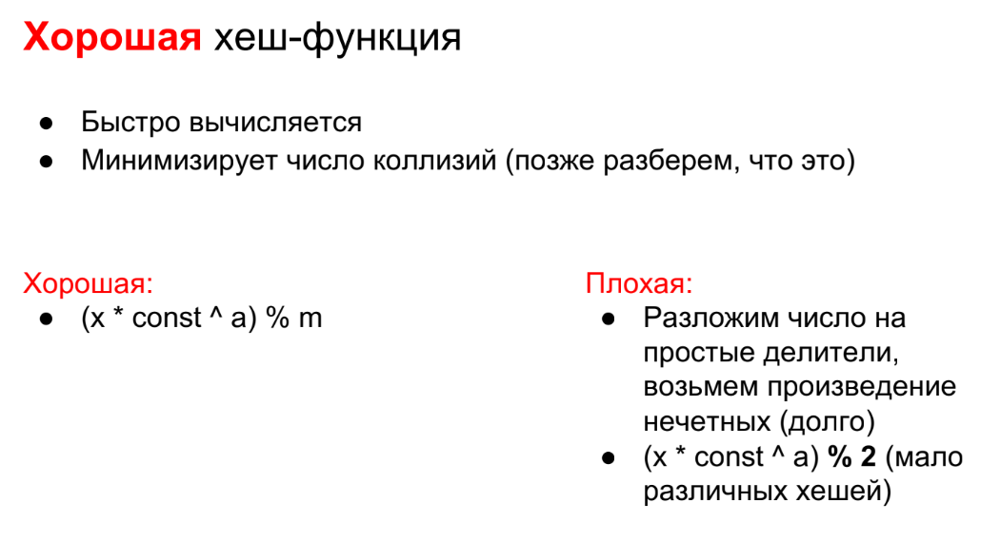
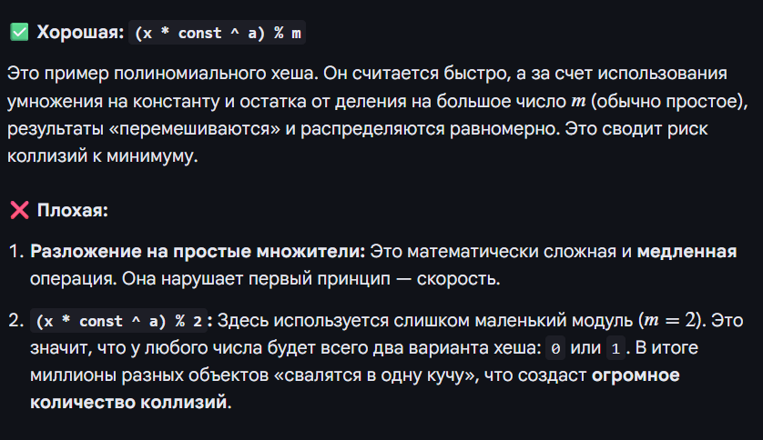
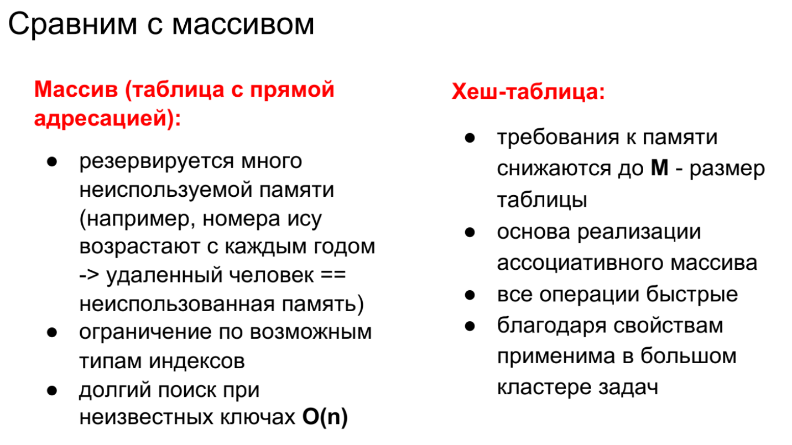
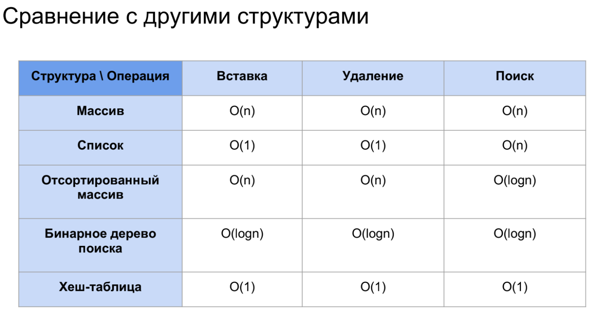
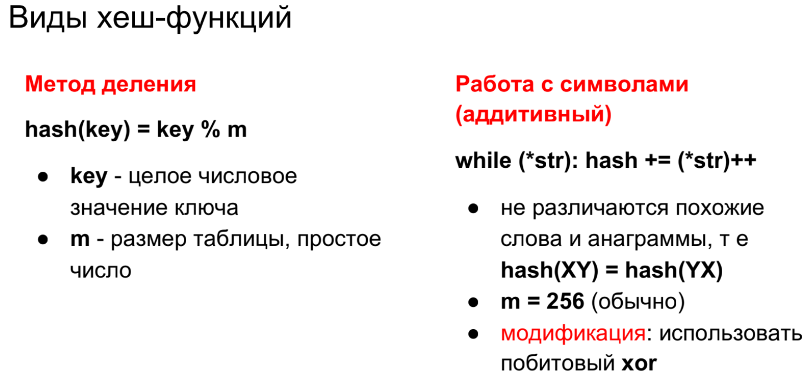
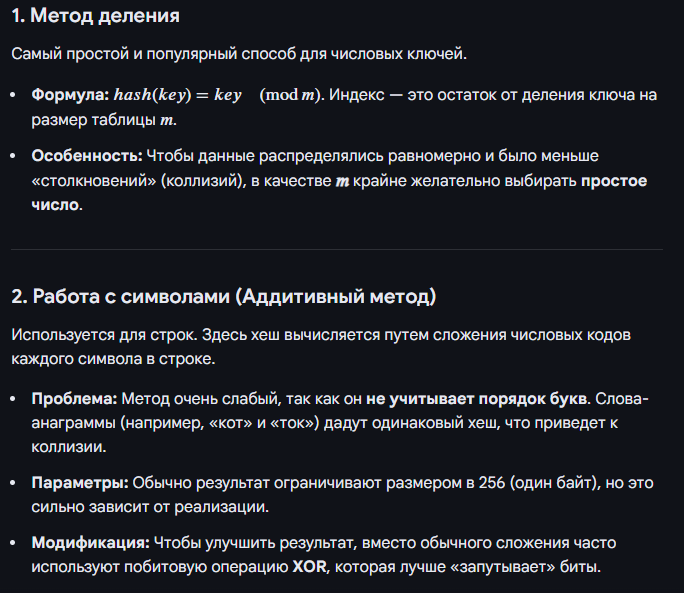
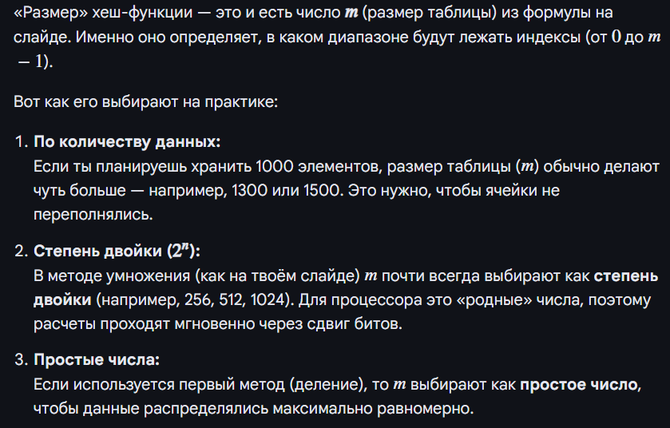
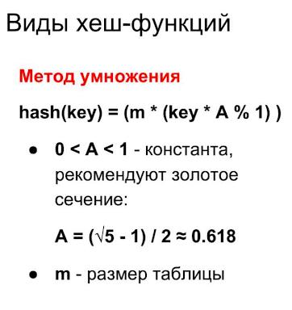
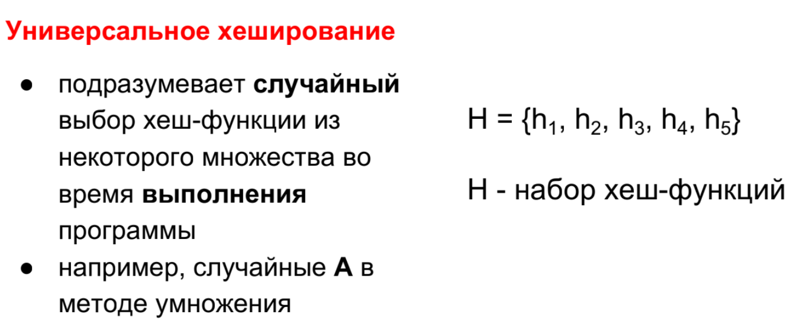
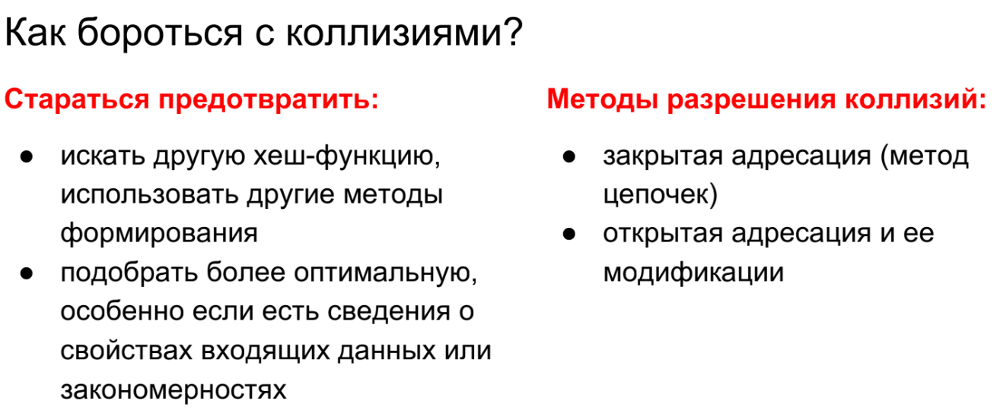
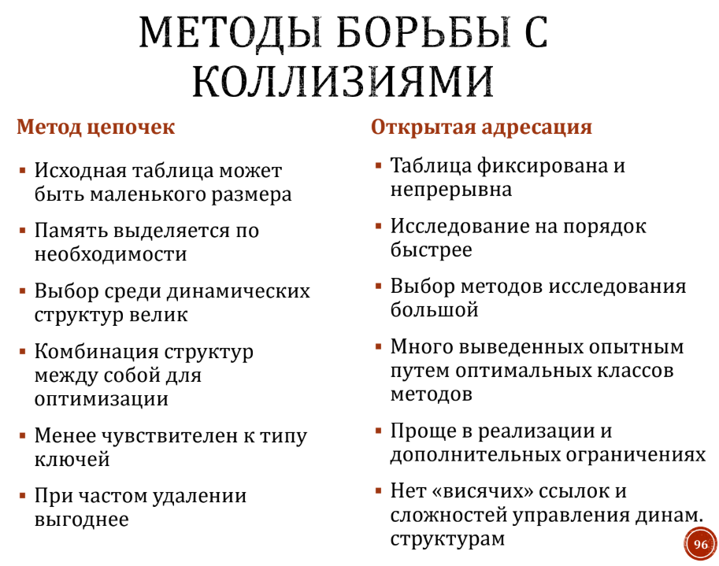
Схемы и рукописные примеры